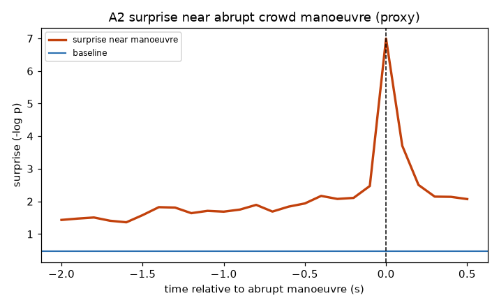
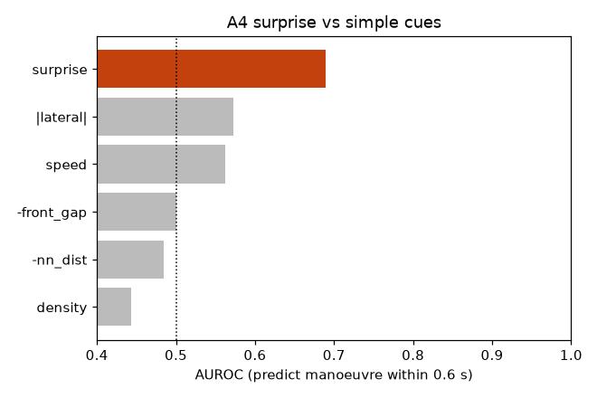
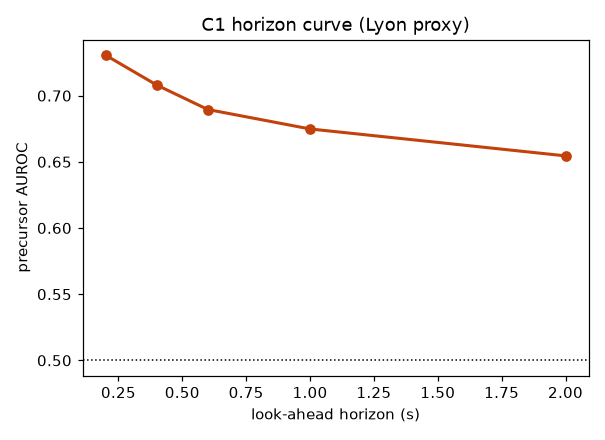
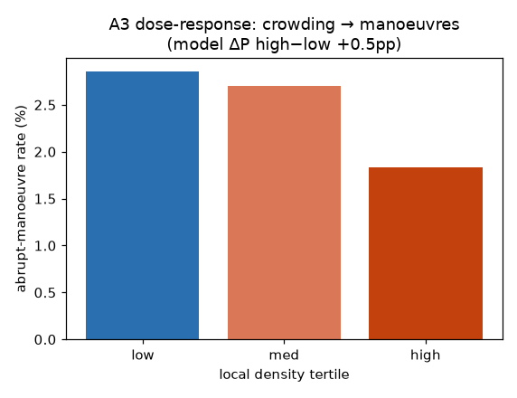
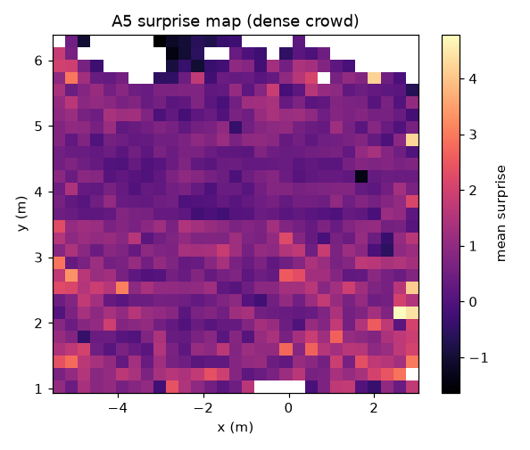
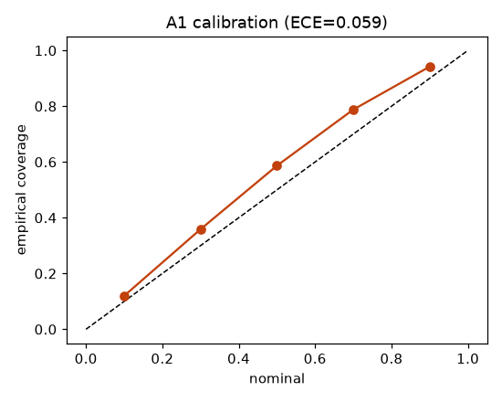

⑨ 密群衆の急機動を尤度で先取りする（Lyon 光の祭典）
最大4人/m²の実イベント群衆。尤度サプライズが"急な機動"の前に立ち上がるかを検証。Dryadと逆に、ここではサプライズが最良の先行指標になる。
0.69前触れAUROC
0.4s先行時間
>幾何量A4でサプライズ最良
0.059校正ECE
1. このデータは何か
Lyon「Fête des Lumières 2022」密群衆データ（仏独MADRASプロジェクト, Nature Sci Data 2025）。俯瞰追跡 TopView 9シーケンス・30fps・メートル座標、密度〜4人/m²の実イベント。10Hzに再標本化し、1,295人・約15万ステップを対象（近傍1.5m内 平均8.3人・最大20＝本物の密群衆）。
データの制約と適応（正直な明記）：付属の contacts.csv は GPS装着 24名の接触"時刻"リストで、各人の壁時計時刻・別日別時間帯であり、TopView軌跡のID/座標と結合できない。よってDryadのような「この接触の直前」per-event前触れは組めない。そこで①ハプニングは自己教師の"急な横機動"proxy（|横加速|上位2.5%×近傍接近, eHMIと同じ発想）、②接触は集団レベルの裏取りに使用、と設計を切替えた。
2. 何を・どう学習したか
Dryadと同一のNF構成・特徴レイアウト（p(dfwd,dlat | 履歴・近傍・局所密度・密度分位・ID)）。＝転移実験⑩が定義できるように揃えてある。前触れ用はproxy非該当ステップのみで学習した"正常群衆モデル"。局所密度を3分位に離散化して刺激とする。
3. 結果
A1：Flow NLL 0.67（Gaussian 2.77）、ECE=0.059。
A2/A4 前触れ：ここがDryadと逆。急機動を0.6秒前に当てるAUROCはサプライズ0.69で、速度0.56・|横|0.57・密度0.44・前方ギャップ0.50をすべて上回る。先行時間0.4秒（正常基準+1σ超え）。
C1：ホライズンを延ばしてもAUROCは 0.73→0.71→0.69→0.68→0.65 となだらかに減衰＝直前スパイクだけでなく本物の先行信号。
A3 密度用量反応：一方でproxy発生率は密度分位で 0.029→0.027→0.018 とむしろ微減。高密度では"詰まって"急機動が物理的に取りにくくなる（jamming）現実を反映。
接触（集団検証）：contacts.csv＝24名で総接触502回、平均20.9回/人・最大99回・平均3.0回/分。密群衆で接触が高頻度に起きること自体を裏づける（per-eventの位置合わせは不可のため集団統計として）。

A2：急機動(t=0)前にサプライズが正常基準を越えて立ち上がる（先行0.4s）。

A4：サプライズが全幾何量を上回る（Dryadと逆）。

C1：なだらかな減衰＝本物の先行（急落＝直前スパイクのみ、ではない）。

A3：proxy率は高密度でむしろ微減＝jamming。密度因果はDryadと対照的に弱い。

A5：群衆空間の平均サプライズ地図。

A1：校正曲線（ECE=0.059）。
4. 図の見方
前触れ曲線＝橙が青(正常基準)を越えた瞬間が先行検知の開始。ベースライン棒＝ここではサプライズ(橙)が最上位。ホライズン曲線＝右に行っても大きく落ちない＝先行が本物。用量反応＝棒が右上がりでない＝密度で機動が増えるわけではない（jamming）。
5. 解釈と意味・使い道
密群衆では尤度サプライズが"急な機動"の最良の先行指標（AUROC0.69・0.4秒前）で、幾何量を上回る。これはeHMIの危険予兆と同じ挙動で、Dryadの"日常回避では効かない"とちょうど裏表。統一仮説＝「サプライズは"異常・反射的な機動"の前触れ。ルーティンな予期的回避には効かず、そこでは密度の因果レンズ（Dryad）が製品」。用途は雑踏警備の先行アラーム（急機動の予兆検知）。ただし密度因果はjammingで非単調なので、"密度→危険"の単純外挿は誤り、という設計上の注意も同時に示す。per-eventの実接触ラベル整備が次段。
条件付き Normalizing Flow（zuko NSF）で自動生成。データ: Dense Crowd Dynamics (Fête des Lumières), Zenodo 13830435 / Nature Sci Data 2025。